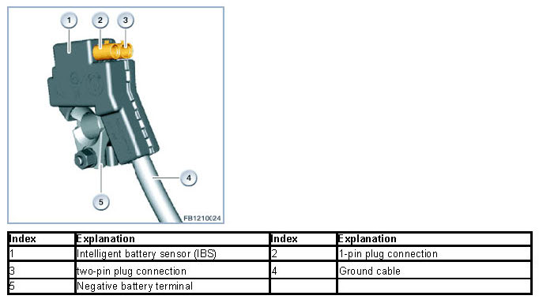
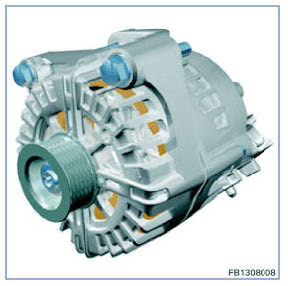
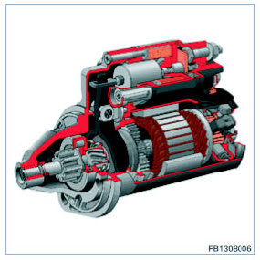
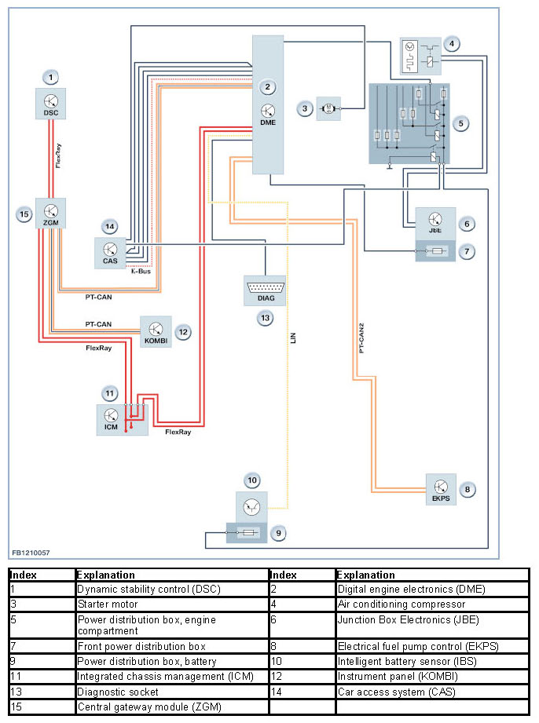
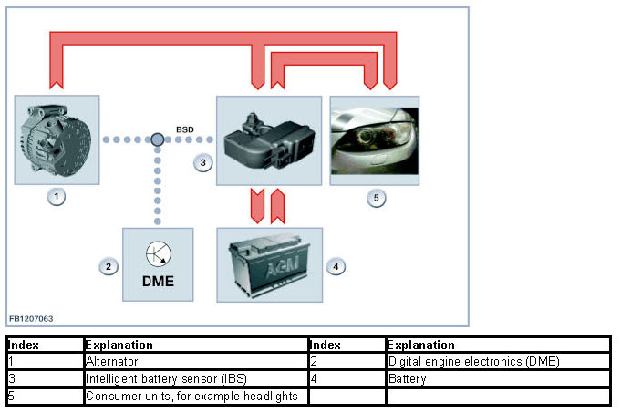
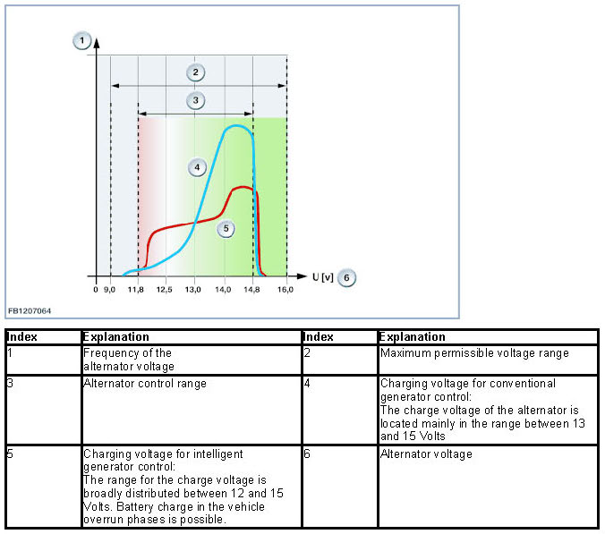

Voltage Supply
Voltage Supply
Voltage supply
The power management is the most important element of the energy management. The power management is software in the Digital Engine Electronics (DME). When the engine is running, the power management system regulates the alternator voltage. On vehicles with an intelligent battery sensor (IBS), consumers may be reduced or even switched off altogether, even if the engine is running. This consumer shutdown lowers the power consumption in critical situations. This prevents the battery from discharging.
Brief component description
The following components for voltage supply are described:
- Intelligent battery sensor (IBS)
- Alternator
- Starter motor.
Intelligent battery sensor
The intelligent battery sensor (IBS) evaluates the current quality of the battery. The intelligent battery sensor (IBS) is a component of the negative battery terminal. The intelligent battery sensor (IBS) regularly (cyclically) measures the following values:
- Battery voltage
- Charge current
- Discharge current
- Battery temperature.
The designation "intelligent" with the battery sensor refers to an integrated micro-controller with a software proportion. Upstream processing of especially time-critical measured variables is carried out by the processor. The results are then forwarded to the Digital Engine Electronics (DME).
The graphic below shows the negative battery terminal on the F10.

Alternator
The alternator exchanges data with the Digital Engine Electronics (DME) across a serial data interface. The alternator sends the Digital Engine Electronics (DME) information, for example the type and manufacturer. This enables the Digital Engine Electronics (DME) to modify the alternator control to suit the alternator type which has been installed.

Starter motor
The starter has the job of rotating the crankshaft of the internal combustion engine at the minimum speed that is necessary for starting up (starting speed).
The starter that is used is coordinated with the engine of the respective vehicle model. The output can be up to 1000 Watts depending on the model.
Engine starting is initiated by pressing the start/stop button. The Car Access System (CAS) switches voltage through to the starter relay via terminal 50L. The starter pinion is engaged in the ring gear of the flywheel using the starter relay and the intermediate gearbox or planetary gear train
Once the starter pinion has been engaged, the crankshaft of the internal combustion engine is rotated with the starting speed by the direct current motor of the starter. The DC motor is supplied with voltage via terminal 30 to do this. Once the internal combustion engine has started, a freewheeling clutch on the starter pinion prevents the starter pinion from being driven by the flywheel. This could damage the starter because of the large gear ratio between the starter pinion and the ring gear (approx. 15:1). Then the starter pinion automatically disengages.

System overview
The following graphic shows the system overview of the voltage supply for F10:

System functions

Communication between the Digital Engine Electronics (DME) and the intelligent battery sensor (IBS) as well as the alternator takes place across the serial data interface. The information from the intelligent battery sensor (IBS) is used to calculate the state of charge and age of the battery in power management.
Power management is the software in the Digital Engine Electronics (DME) that is responsible for all calculation in the area of energy management. The software also handles the function of intelligent alternator control. Further information is delivered by the control units connected to the bus system. Situations are derived from the collected information that also influence the charging process.
An AGM battery is installed due to its height cycle resistance.
The following system functions are described:
- Voltage supply
- Intelligent generator control
- State of charge and control of the voltage.
Voltage supply
The ignition starter switch signals terminal 15 ON to the Digital Engine Electronics (DME) on a separate pin. In response, the Digital Engine Electronics (DME) activates the DME main relay. This means that the DME main relay of the Digital Engine Electronics (DME) supplies other inputs of the Digital Engine Electronics (DME) with voltage. The DME main relay also ensures that voltage is also supplied to other control units and components. For memory functions, the Digital Motor Electronics (DME) require an uninterrupted voltage supply via terminal 30.The ground connection of the Digital Motor Electronics (DME) is guaranteed by several pins that are connected with one another in the Digital Motor Electronics (DME).The battery voltage is continuously monitored by the Digital Engine Electronics (DME). With a battery voltage of less than 2.5 Volts or greater than 24 Volts, a fault is entered. The diagnosis only becomes active 3 minutes after engine start-up. This ensures that the effects of the starting operation or starting aid on the battery voltage will not be registered as a fault.
Intelligent generator control
The function of the alternator control represents a refinement of the charging strategy for the vehicle. The battery is no longer completely recharged but charged to a certain degree depending on various ambient conditions (for example, ambient temperature and age of the battery). In contrast to conventional charge strategies, battery charging now only takes place in the overrun phases of the vehicle. The alternator excited to the maximum amount during these phases. Electrical energy is generated and fed into the battery. Fuel is not consumed. The kinetic energy present from the wheels of the coasting vehicle drives the alternator via and engine.
State of charge and control of the voltage
Unlike the normal charge voltage control, the intelligent alternator control prevents complete charging of the battery. The battery charge goes up to the range between 70 to 80 % of the maximum possible charge. Intelligent generator control is suppressed cyclically. This temporarily permits 100% battery charging to achieve full battery capacity over the long term (regeneration). With intelligent alternator control, the alternator voltage is located more frequently in the low voltage range in order to have free battery capacity for energy recuperation.

Notes for Service department
Causes
The principal function of the alternator is also guaranteed when communication between the alternator and Digital Engine Electronics (DME) is interrupted. The following fault causes are distinguishable by the fault memory entries:
- Overheating protection:
The alternator is overloaded. To provide protection, the alternator voltage is reduced until the alternator has cooled down again (the charge indicator light does not light up).
- Mechanical fault:
The alternator is physically seized or the belt drive is defective.
- Electrical fault:
Excitation coil defective, excitation coil has been interrupted, overvoltage due to defective controller.
- No communication:
Faulty line between Digital Engine Electronics (DME) and alternator.
An interrupt or short circuit in the coils of the alternator cannot be detected.
NOTICE: Replacement of distribution box in engine compartment only as a complete unit.
The power distribution box in the engine compartment (for example with engine N55) is only replaceable as a complete component. Moreover, the integrated fuses cannot be checked manually. Follow the instructions in the test modules.
We can assume no liability for printing errors or inaccuracies in this document and reserve the right to introduce technical modifications at any time.